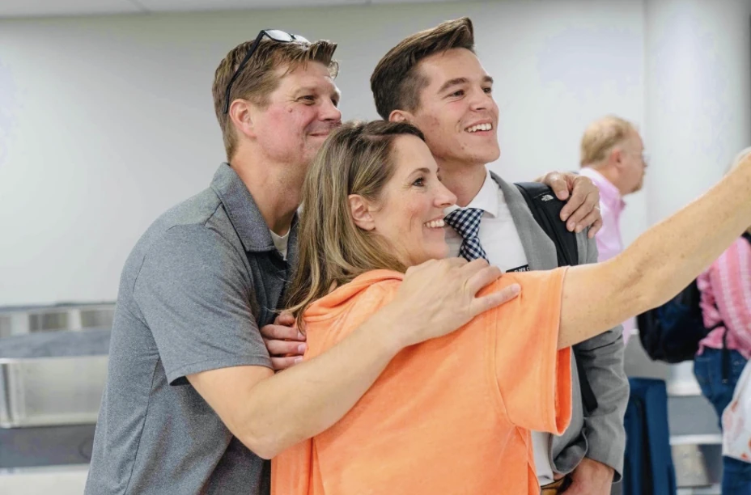

Home Page
This site is a portfolio about myself. I wanted to create this to document my life and to showcase who I am. In this site I have pictures of the things I love to do that make me excited! I normally don’t like talking about myself but this blog is going to be entirely about me. I hope this site will inspire others to try new things, get to know me, and learn about different interests. Everyone is different and we can all learn from others, that's a great part about sharing our lives with one another, is that in a way we can enhance or inspire someone else’s life.
Hobbies

Skateboarding
I grew up skateboarding ever since I was a kid around 4 years old. I started with my brother’s and my uncle. We would go to the skatepark early in the morning and have a ton of fun. First it was a challenge but I started getting better and loved the idea of progressing and learning new tricks. I’ve since gone on to skateboard in multiple competitions and have had sponsors to support me along the way. Skateboarding to me has been a way for me to push myself, enjoy myself, and get creative. I think my favorite thing about skateboarding is being with friends and family while I ride. Sharing fun moments with one another is a blessed opportunity.
Rock Climbing

Rock Climbing is one of the riskier things I enjoy doing. I started climbing with a really close friend of mine while I was in high school. I had an old harness and a pair of shoes with holes in them. We would climb at least two or three times a week and have the funnest time! Climbing is an outlet for me to learn control and focus. When I climb I feel like it gives me an opportunity to be in tune with my emotions, capabilities, and thoughts.
Climbing in Idaho

Climbing gives me a sense of freedom. I started climbing outdoors during covid in 2019. Me and my buddy got super good deals on climbing gear and we sent out on a mission to find the raddest climbs in Tennessee we could. We had some big falls, learning curves, and fun while we climbed together. Climbing isn’t as easy as you think haha. Grateful for climbing as it’s brought me and my buddy Caleb really close together, we’ve built a relationship that’ll last decades.
Nature

Nature has always been very big in life! Being outdoors I feel at peace. Being outside has given me a great perspective of our life here on earth. I often enjoy hiking outside and going to the lake. When I'm outside I'm reminded how small I am in this big world. I think theres something great about the outdoors. For me the outdoors is a place to remember the small and simple things in life, it helps me be greatful for God.
Acomplishments

I served a two year mission trip for The Church of Jesus Christ of Latter-Day Saints from 2020-2022. It was an incredible experience. Maybe the toughest thing i’ve ever done. As a missionary we went door to door sharing messages about the restored gospel of Jesus Christ. We’d reach out to people and friends in the church as much as we could. Our purpose was to share the message of the restoration of the gospel of Jesus Christ. As I did so I have felt closer to Christ than I ever have before. It was a remarkable experience to travel and visit people who are in need of help and be able to give that help to them.
I’m so grateful for my mission trip because It taught me so many valuable lessons. One of those lessons is that God loves each and everyone of us. I recently returned a year ago from my mission trip and haven't regretted a bit of it. Taking two years out of my life for God, taught me more than I ever would have learned in those 2 years.